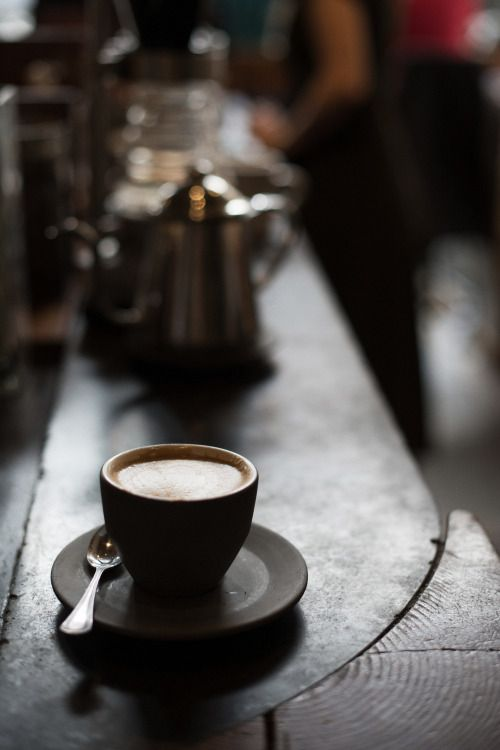

Lec-On Coffee
Lec-On Coffe S.A de C.V. es una cafetería que no solamente se encarga de ofrecer este servicio,
sino que también se encarga de promover el interés de la lectura en los salmantinos,
de tal manera que el lugar de la cafetería se encuentre con un ambiente adecuado,tranquilo para poder concentrarse y
poder disfrutar de la lectura, donde se tengan la accesibilidad de poder encontrar libros de interés o las personas recurran a este lugar solo para leer sus libros.
¿Sabes de dónde viene la palabra café?
Caffe en italiano, coffee en inglés, kaffee en alemán… el café lo puedes pedir fácilmente en cualquier parte del mundo. Sin embargo, el origen de la palabra viene del árabe qahwah, haciendo alusión al “vino del grano”.
Luego de esto, se mezcló con la palabra turca kahve para finalmente adaptarse a los diferentes idiomas que ya te mencionamos.
¿Sabes cuál fue la primera cafetería del mundo?
En 1475, en Constantinopla (actualmente Estambul), Kiva Han abrió la primera cafetería del mundo. Mientras que en Europa, se abrió en 1645 en Venecia y en 1650 en Londres.
¿Sabías que el café es el segundo producto más exportado del mundo?
¡Y es que además es la segunda bebida más consumida del mundo! Cultivado en más de 50 países, en lo que se conoce como el cinturón del café, Brasil vuelve a encabezar el listado y aparte de ser el que más lo produce, también es el que más lo exporta.
Si quedaste con la duda, te contamos que el petróleo es el producto de mayor exportación y el agua la bebida más consumida.
Únete a nuestro equipo.


©2023 por Lec-On Coffe